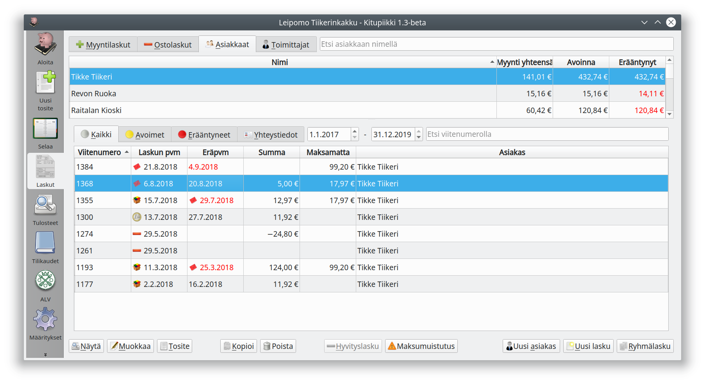
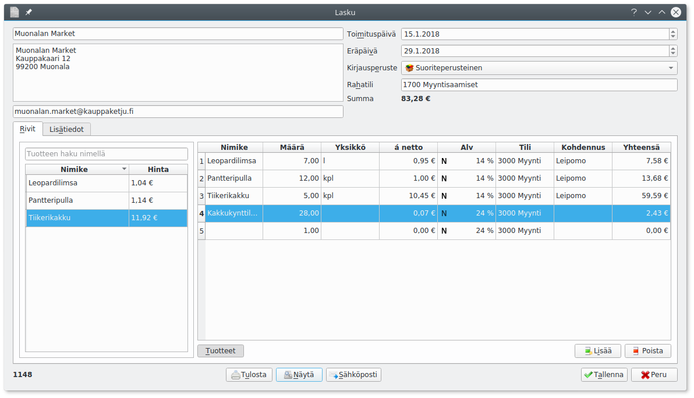
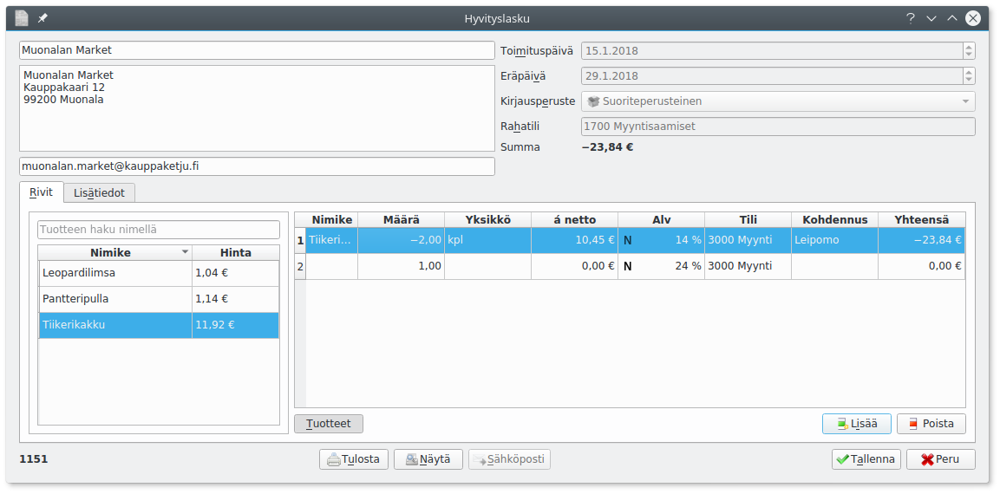
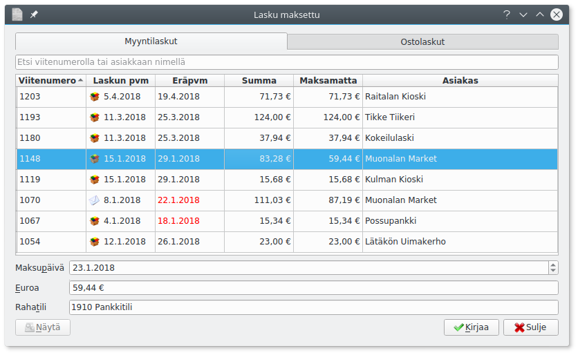

Laskutus

Laskut-välilehdellä voit selata laskuja sekä tehdä uusia.
Välilehdellä valitaan näytettäväksi kaikki laskut, maksamattomat eli avoimet tai erääntyneet eli myöhässä olevat laskut. Laskuja voi rajata laskun päivämäärän mukaan. Voit myös hakea asiakkaan nimellä tai viitenumeron alkuosalla.
Näytä-painike avaa nähtäväksi valitsemasi laskun, Hyvityslasku-painikkeella laadit valittua laskua koskevan hyvityslaskun ja Uusi lasku-painikkeella pääset laatimaan uuden laskun.
Uusi lasku¶

Kitupiikki pyrkii täydentämään laskun saajan nimen ja osoitetiedot vanhojen laskujen perusteella.
Laskun kirjausperuste sen mukaan, mille päivämäärälle lasku kirjataan kirjanpitoon, katso kirjaamisperusteet. Maksuperusteinen lasku näkyy kirjanpidossa vasta, kun se on maksettu. Käteiskuitti laaditaan välittömästi käteisellä maksettaessa, jolloin tuloste toimii myös kuittina.
Maksuperusteinen arvonlisävero
Laskut kirjataan yleensä suoriteperusteisesti. Alle 500 000 euron liikevaihdon yrityksillä on kuitenkin oikeus tilittää arvonlisävero maksuperusteisesti.
Syötä laskutettavat tuotteet Rivit-välilehdelle. Samalla valitset, miten myyntilasku kohdennetaan kirjanpidossa. Arvonlisävero kirjataan oletuksena nettokirjauksena, bruttokirjauksen voit tehdä Muu alv-valinnasta avautuvalla ikkunalla.
Tuotteet-napilla avautuu tuoteluettelo. Kun olet syöttänyt riveille tuotteen, paina rivin päällä hiiren oikeaa nappia ja pääset valitsemaan Lisää tuoteluetteloon. Tuotteesta tallennetaan nimi, yksikkö, yksikköhinta, verotus, tili ja kohdennus. Luettelossa olevan tuotteen lisäät laskulle napsauttamala sitä tuoteluettelossa. Tuotteen voi poistaa valitsemalla tuoteluettelossa tuotteen nimen päällä hiiren oikealla napilla avautuvasta valikosta Poista tuoteluettelosta tai tuotteen tiedot voi päivittää valitsemalla tuotteen rivin päällä hiiren oikealla napilla avautuvasta valikosta Päivitä tuoteluetteloon.
Lisätiedot-välilehdelle syötetty teksti tulostuu laskulle.
Valmiin laskun voit tulostaa, voit avata pdf-tiedoston esikatseltavaksi näytä-valinnalla tai lähettää laskun suoraan sähköpostilla. Tallenna-valinnalla lasku tallentuu kirjanpitoon ja ikkuna sulkeutuu.

Hyvityslasku¶
Hyvityslasku laaditaan valitsemalla Laskut-välilehden luettelosta hyvitettävä lasku ja painamalla Hyvityslasku.

Kirjoita laskulle tehtävät hyvitykset/korjaukset Rivit-välilehden ruudukkoon.
Luottotappio
Jos lasku jää luottotappioksi, se poistetaan avointen laskujen luottelosta tekemällä hyvityslasku, jossa laskun summa kirjataan luottotappioiden menotilille.
Laskun maksaminen¶
 Laskut kirjataan maksetuksi yleensä tiliotteen perusteella niin, että tiliotteesta tulee maksun todentava tosite. Kirjattaessa tiliotetta paina kirjausikkunan alareunan Lasku-painiketta.
Laskut kirjataan maksetuksi yleensä tiliotteen perusteella niin, että tiliotteesta tulee maksun todentava tosite. Kirjattaessa tiliotetta paina kirjausikkunan alareunan Lasku-painiketta.

Saat avointen laskujen luettelon, josta laskua voi etsiä viitenumerolla tai asiakkaan numerolla. Valitse lasku ja paina Kirjaa.
Jos lasku on maksettu vain osaksi, muuta euromäärä vastaamaan maksua. Lasku jää edelleen maksamattomalta osaltaan avoimeksi samalla viitenumerolla.